Missables Checklist for Tales of Vesperia
TODO:
Insert screenshots/video links.
Act One
Zaphias
World Map
Deidon Hold
After Karol joins the Party
Aspio
Ehmead Hill
Capua Nor
Capua Torim
Caer Bocram
Heliord
After Estelle joins back at the end:
Dahngrest
Keiv Moc
Dahngrest
Ghasfarost
Act Two
Dahngrest
Capua Torim
After Getting the Ship
In Capua Nor, sleep at the Inn to see Karol's Dream (PS3 and Definitive Edition) At the north of Halure or west of Aspio, you can find the travelers' inn King Of Adventure. Talk to Rich if you have beaten Green Menace. Rest for more talk with Rich (King Of Adventure Part 3) (PS3 and Definitive Edition) At the north of Halure or west of Aspio, you can find the travelers' inn King Of Adventure. Rest to meet with Rich and make sure this is done BEFORE In Halure, talk to the kids under the tree to get the attachment Veil (Under The Tree Part 2) In Halure, talk to Sicily before the Inn for Raven to learn Arrivederci (Professor Sicily Part 1) In Deidon Hold, arrange the Warehouse for Miracle Gel, Limits Bottle, Spicy Bottle and 2000 Gald as the reward (Tidy Up The Warehouse Part 1) In Zaphias, talk to an Old Woman at the Lower Quarter. Go north to find Estelle and Rita. Go to the Nobles Quarter to find Estelle and Rita again (PS3 and Definitive Edition) In Zaphias, head toward the Nobles Quarter. Go on to the west to talk to Sher again. Back track to the previous area and talk to Lune who is sitting on a bench. Yuri will learn Tiger Blade and the Kingdom Celeb title (Dark Enforcer Part 2) In Capua Nor, go west and find Sicily for Raven to learn the Vacance skill and his Twilight Dreamer title (Professor Sicily Part 2) In Capua Torim, arrange the Warehouse for Power Light, Golden Horn, Lottery Gel and 2000 Gald as the reward (Tidy Up The Warehouse Part 2)
Ocean
Atherum
Capua Nor
Capua Torim
Nordopolica
Weasand Of Cados
Mantaic
Sands Of Kogorh
Revisiting Mantaic after Yormgen
After Nordopolica Events
After the Death Of Don
After Getting Baul
In Mantaic, go north to find the Dispatcher. Talk to Yu near the Inn to get Book of Friendship and Comrade Crest . Go to the Inn in Capua Torim and speak to Nobis to get Rainbow Bookmark . Report back to Yu in Mantaic for 3000 Gald (Guild Quest Part 1) If you have done (Bug Hater), go to Mantaic to rest at the Inn and pick Yes (Portrait Of Nan) In Mantaic, hand over Trident for Rice, Potato, Onion and Carrot (Cow Boy Part 2) In Mantaic, go north and speak with Clay. Sleep at the Inn and go north (Dark Enforcer Part 4) In Nordopolica, head towards the entrance to the Colosseum (Truth Of Ruin's Gate Final Part) In Nordopolica, head towards the Arena and speak with Natts (After The Death Of Belius) In Nordopolica, the Arena is now open. Clear 30 Man, 50 Man and 80 Man Melee for now (Arena Part 1) In Nordopolica, if you have cooked 600 times and Patty has three recipes MASTERED, talk to the person to the right of the Shop (PS3 and Definitive Edition) In Ehmead Hill, go toward the grave on the cliff to find Duke (Elucifer's Grave Final Part) Enter Ehmead Hill from the western entrance/exit. Go north, east and north to get the Fire Lilly (Avenging Soldiers Part 1) Enter Ehmead Hill from the eastern entrance/exit. Go toward the Blastia that is blocking the main road. Head to Aspio and check the bookshelf in the library for Hermes' Notes . Go to Capua Torim and rest at the Inn to learn Negative Gate. If you are to do this later in the game, you can get Hermes Memo from a Mage in the Inn of Capua Torim (Study Of Hermes Part 1) In Capua Nor, you can find Nan if you have completed 50% of the Monster Book In Capua Torim, toward the right of the Fortune's Market HQ. Speak with the Female by the tree (The Dragoon Final Part) In Capua Torim, speak with Kaufman in the Fortune's Market HQ. Go to Dahngrest and enter the right shop to speak with the Owner (Brionac Part 3) In Dahngrest, if you haven't done it In Dahngrest, enter the western bar. Exit out and talk to the Girl that is at the center of the town. Enter the eastern bar and talk to another Girl. Head toward the Union HQ to get Raven's Ladies' Man title (Ladies' Man) In Dahngrest, enter the western bar and talk to Sassoon at the upper left corner. You can get various Attachment/Title based on what you have. Be sure to check out with her frequently (PS3 and Definitive Edition) In Dahngrest, go to the Union HQ and go find Kaufman in the Fortune's Market in Capua Torim (Rebuilding The Union Part 1)
After Meeting Phaeroh
Renansula Hollow
Myorzo
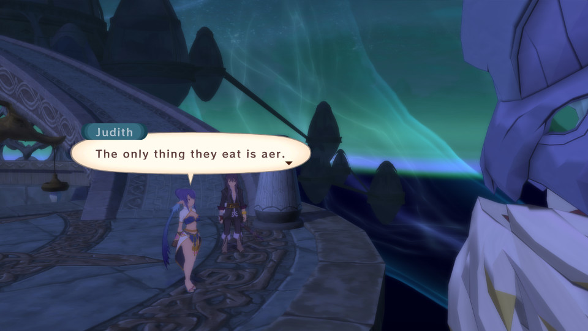
Yormgen
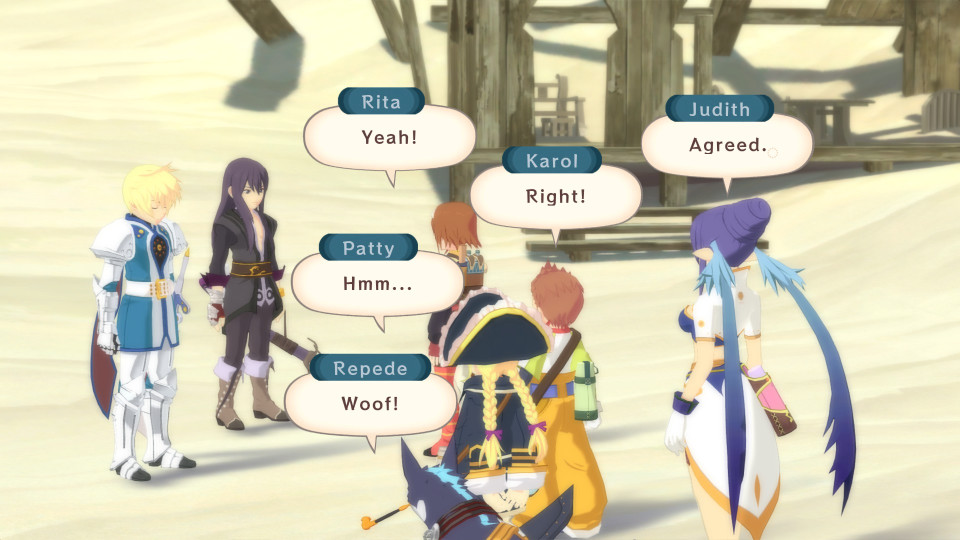
With Flynn in the Party
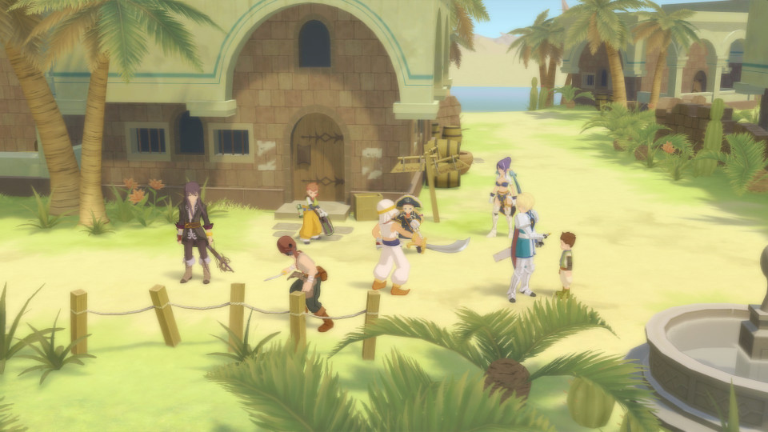
Baction
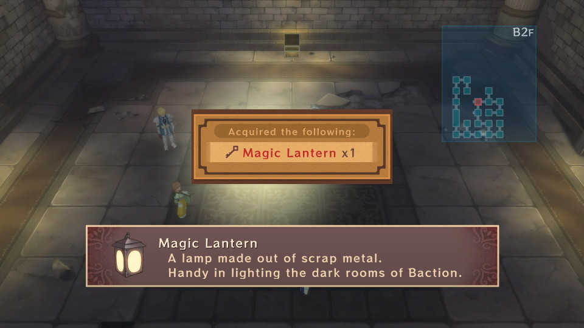
Before heading to Zaphias for Estelle
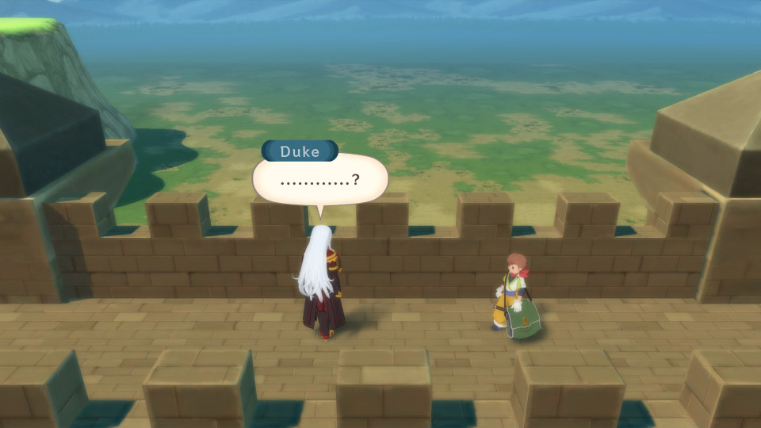
After Estelle Joins Back
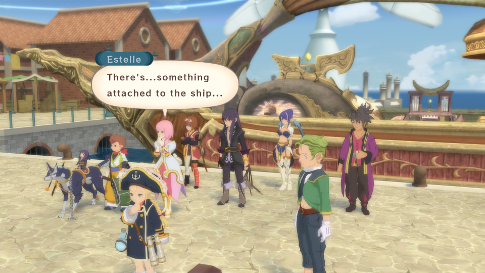
When everyone joins back at Zaphias, Flynn joins the party temporarily (PS3 and Definitive Edition) In Mt Temza, head up for Compact of Remembrance (Avenging Soldiers Part 2) In Phaeroh's Crag, approach the Phantom Rift . Within Yormgen, speak with the Sage within the NW house and choose to rest when prompted (Extra Dungeon Part 1) At the NW of the World Map, you can find Yumanju at the further north of Mt Temza. Speak with the Receptionist and that is it for now. In the meantime, prepare 900000 Gald (Hotspring Part 1) In Mantaic, speak with the Cow Boy. Hand over Poison Ward, Paralyze Ward and Stone Ward for Flare Cape (Cow Boy Part 3) In Myorzo, obtain the Abyssion from the Elder (Fell Arms Part 1) In Nordopolica, arrange the Warehouse for Specific, Paralyze Charm, Treat and 2000 Gald as the reward (Tidy Up The Warehouse Part 4) In Capua Nor, go west to find Duke (Duke Final Part) In Capua Torim, head towards the port to get the ship modified with Salvage Crane and the ability to sail on shallow area (Professor Sicily Part 3) In Capua Torim, speak with the Round Spectacle Old Man to the right of the western stairs (standing in front of the ice-cream stall). You need seven kinds of Food Materials which you can buy at the shops (the shop at Yumanju carries every Food Materials). For the knife, you need Sharp Blade and Flare Stone . Go to the western bar in Dahngrest, talk to the right Bartender for the Kitchen Knife . Report back to the Old Man for the Seafood Stew recipe (PS3 and Definitive Edition) Once you have obtained the Salvage Crane, go to Capua Nor and head towards the signboard on the west. Accept to pay and exit out. At the NW of Zaude, there is a Harvest Point. Sail to it and check for a scene (PS3 and Definitive Edition) In Heliord, speak with Pauly near the Blastia. Go east and defeat the enemies for Repede's Special skill which enables Mystic Artes and Repede's Nanny title (Children Lover) In Dahngrest, head toward the Inn. Flynn gets the Emperor Of The Night title (PS3 and Definitive Edition)
Zaude
Act Three
After Everyone Joins Back
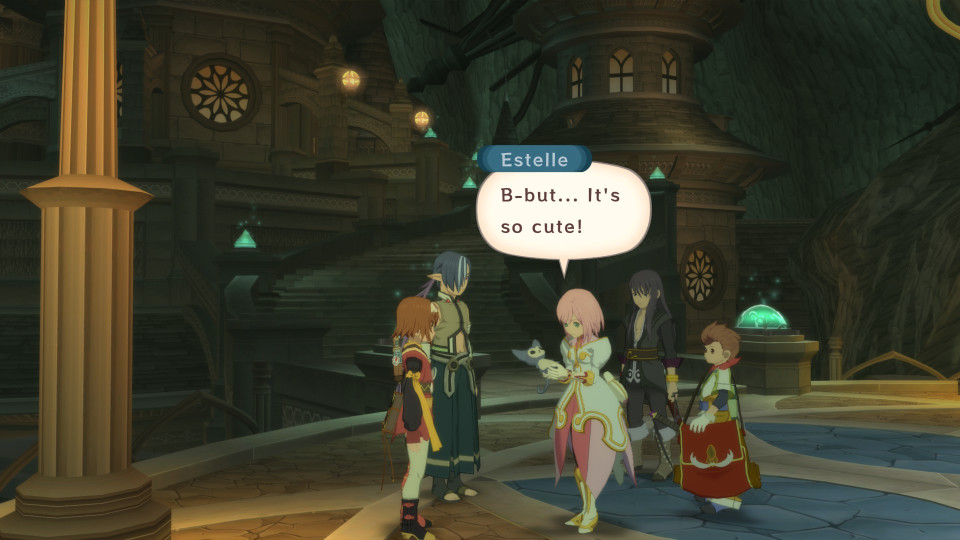
In Zaphias, talk to LeBlanc for Raven's Imperial Knights Captain title (Rebuilding The Union Part 2) In Zaphias, head toward the Nobles Quarter (Dark Enforcer Part 5) In Deidon Hold, talk to the Man near the tents to play Repede's Pro Snowboarding minigame. Clear it in short amount of time then quit the Mini Game for Repede's Snow Delivery Dog . When clearing the other courses, Repede needs to equip specific Overdrive Attachment to match the Referees of the course (PS3 and Definitive Edition) In Myorzo, enter the Elder's House. Check the stand before the back wall to get the Bush Baby Doll . Go to Aspio and speak with Tort for Estelle to learn Astion . If you are to do this later in the game, go to Deidon Hold instead of Aspio (Krytian Style Fighting) In Myorzo, after finishing the above sidequest In Yumanju, pay 300000 Gald. After, sleep at any Inn and come back to Pay 600000 Gald (Hotspring Part 2) Fly toward the top of Mt Temza to trigger a scene (Dragon Race Part 1) In Mantaic, speak with the Cow Boy. Hand over Hourglass and All Divide for Gel Set (Cow Boy Part 4) In Capua Torim, toward the port to find Gauche and Droite. Go to Zaude and head to where you fought against Yeager to fight Gauche and Droite. While fighting them, be sure to steal Gauche Sword and Droite Sword . After beating them, you will get Letter of Challenge (L. Claw) and Divine Cannon for Raven. With the Letter of Challenge (L. Claw), you can unlock 100 Man Melee in the Arena. However, don't clear 100 Man Melee because you won't get the full reward unless you have the Letter of Challenge (H. Blades) (Avenging Soldiers Final Part) In Capua Torim, speak with the Woman in front of the floral stall. Donate 500,000 Gald and attempt to exit town through the west to get Estelle's Noble Princess title (Estelle's Teacher Part 4) In Heliord, go down to the Lower Section. You can find Sicily by the river. After the cutscene, fight at least ten battles and return back to the same spot where Sicily is. You can find the Robot near the eastern tent (Professor Sicily Part 4) In Heliord, get near the Blastia Addendum: Need to be done at night (PS3 and Definitive Edition) In Heliord, speak with the Shop Owner. Take your time to gather the raw materials to get title for Judith, Estelle and Karol as some of the materials are not accessible yet (Sexy Clothes) In Dahngrest, enter the eastern shop and talk to the Soldier. Be sure to get the Klonoa figurine I mean (C) F Statue from the chest (Favorite Toys Part 1)
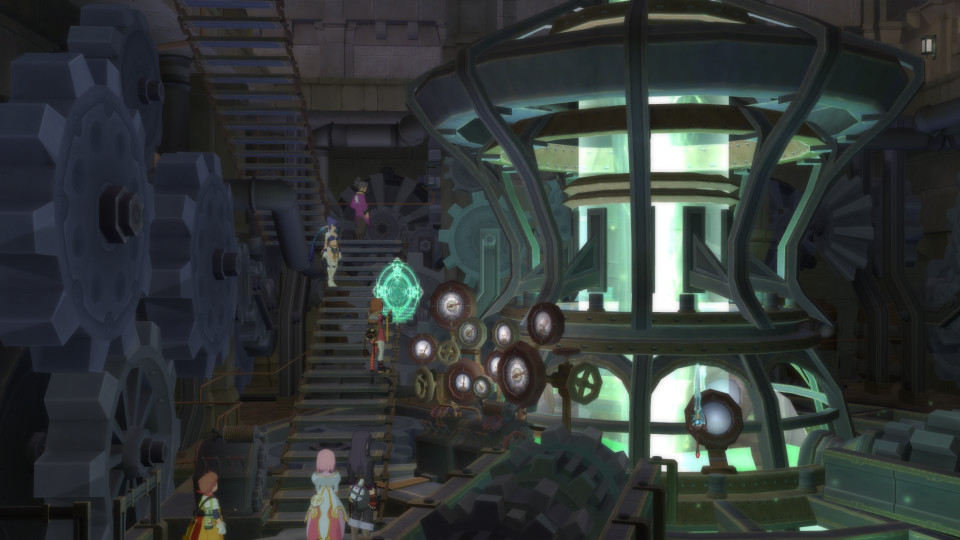
After The Birth Of Undine
After Fending Off Nordopolica From Threats
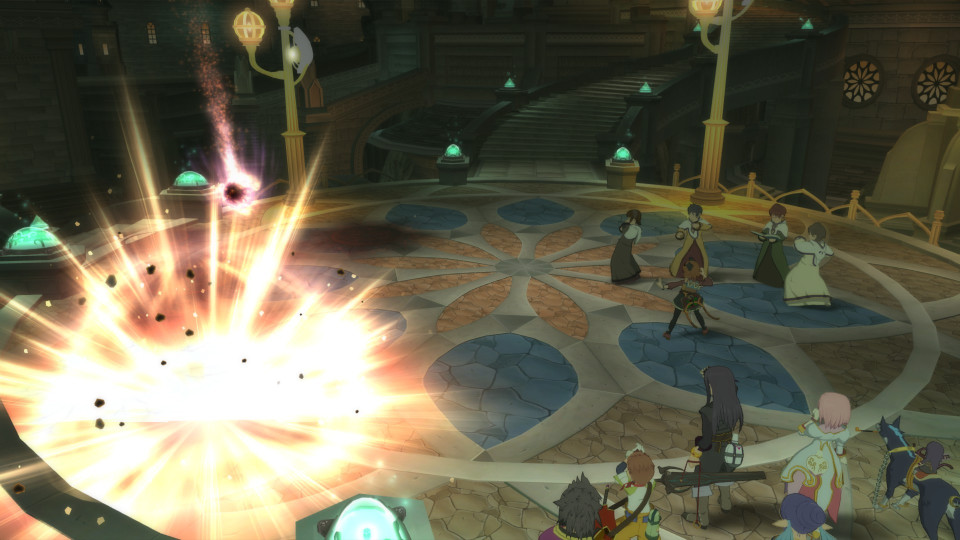
After Getting All Four Spirits
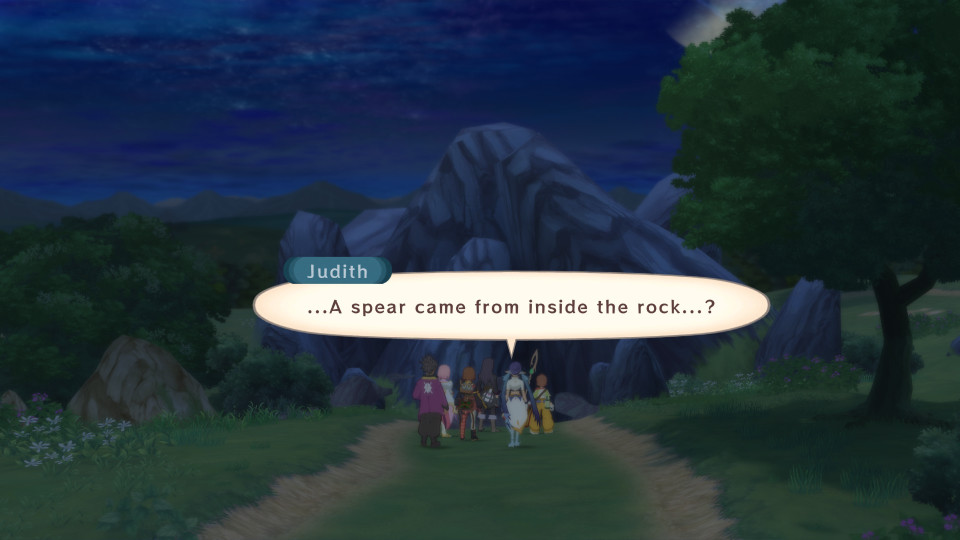
Resting at Capua Nor (PS3/Definitive Edition)
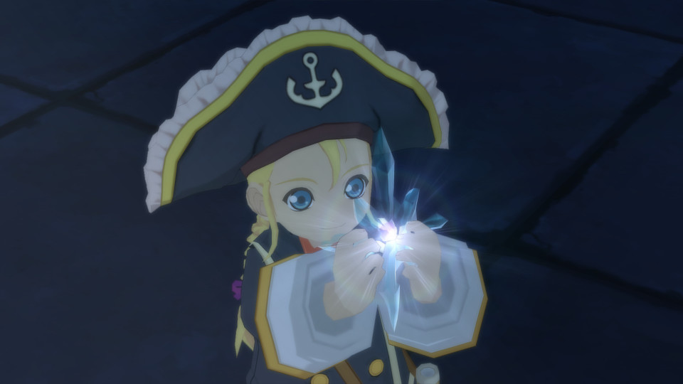
After Capua Nor
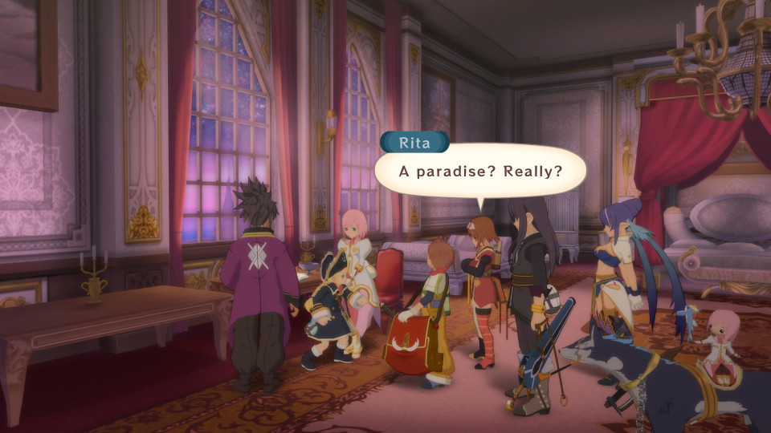
In Zaphias, enter Estelle's Room in the Castle to hear about the City of the Waning Moon. Go to the last area in Zaude and you will be able to enter the Necropolis of Nostalgia. At the first area, Firmament , you can find Flynn's Fell Weapon Seven-Branched Blade at the NW of the 8F. At the second area, Existence , you can find Patty's Fell Weapon Corbis at the SE of 9F. After beating Ohma , you won't be able to advance further until you have beaten the game (PS3 and Definitive Edition) In Zaphias, head down toward the Fountain in Lower Quarter from the top of the slope. After that, head towards the Castle. In the PS3 and Definitive Edition, enter through the Lower Quarter before heading to the Castle (Future Of Blastia) In Zaphias, sleep in Yuri's Room to trigger a scene where Rita gets Estelle's Best Friend title while Estelle gets Best Friends title (PS3 and Definitive Edition)
Fly to the Wecca Continent and land at the SE Part. You can encounter the Giganto Bloody Beak (PS3 and Definitive Edition) After beating all eleven Giganto Monsters, go back to speak with Rich for Karol's Valiant Swordsman title. Go back to Capua Torim to speak with Rich's Father and report back to Rich (King Of Adventure Part 3) In Capua Torim, you can enter the Lighthouse which is Patty's Home (PS3 and Definitive Edition) In Nam Cobanda Isle, talk to the Cow Boy at NE. For 300 Chips, you can fight specific bosses for any missed Secret Mission. However, you don't get any Grade, Item, EXP and Gald (PS3 and Definitive Edition) In Nam Cobanda Isle, enter the Gym. Speak with the Cow Boy at the Chip Exchange, Poker Table and the Ant Lion by the Toy Machines. Use over 250000 worth of Chips to trade in Prizes for Judith's Poker Face title. Exit out the Gym and enter the Shoe Locker room (Poker Face) In Nam Cobanda Isle, enter the Gym and speak with the Cow Boy at the Poker Table if you haven't done so yet. Exit out and enter back the Gym to trigger the scene with Kaufman. Whether you win or lose the match, Judith will get the Legendary Gambler title (Gamble Life) In Nam Cobanda Isle, speak with the Ant Lion near the entrance/exit after you have done (Favorite Toys Final Part). If you have opened up 445 (86%) Treasure Boxes, you will get Yuri's Treasure Hunter title (Treasure Hunter)
FAVORITE TOYS SIDEQUEST NOTE: For PS3 and Definitive Edition, you need to wait until Flynn joins the party permanently for Hanks to show up in Zaphias.
After Flynn Leaves the Party (Fetching Leaders)
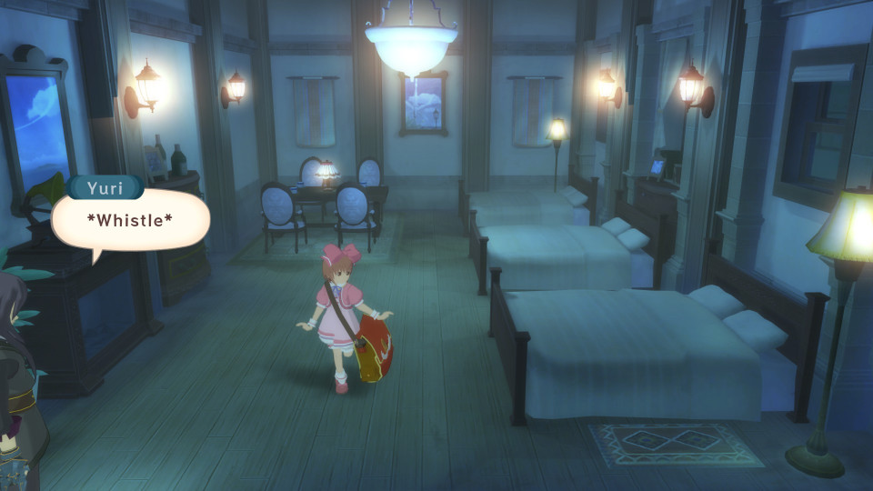
VS Flynn
The best way to unlock the Secret Mission is to equip Compact Sword +1 which has the Minimum Damage skill to prolong the battle. Once unlocked, switch to a better weapon to finish off the battle. Alternatively, you can redo this battle for the Secret Mission achievement at Nam Cobanda Isle.
Here's the list of artes (thanks to Massicot from ResetEra!):
After Aurnion
NOTE: Aurnion is a classic JRPG example where there are many sidequests that may or may not trigger depending on your progress. Do complete more sidequests (possibly out of order) if a sidequest failed to trigger.
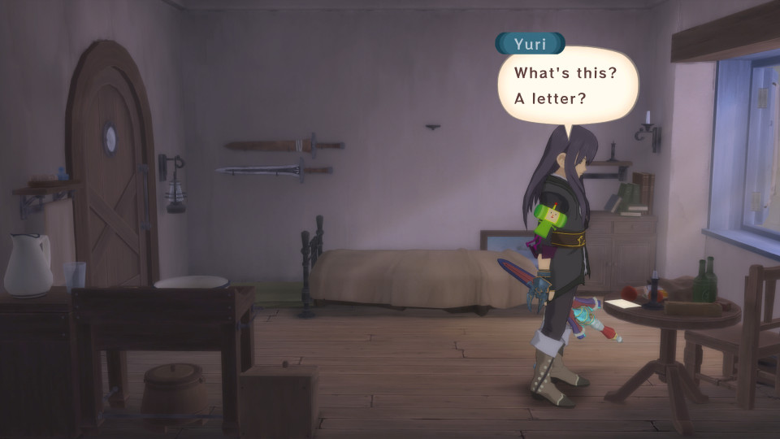
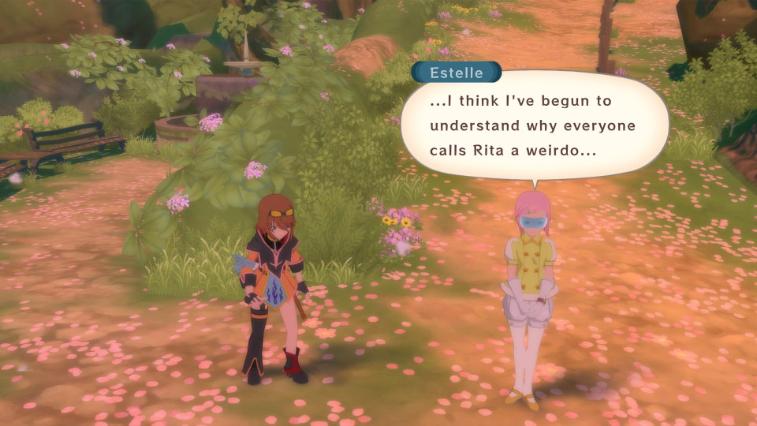
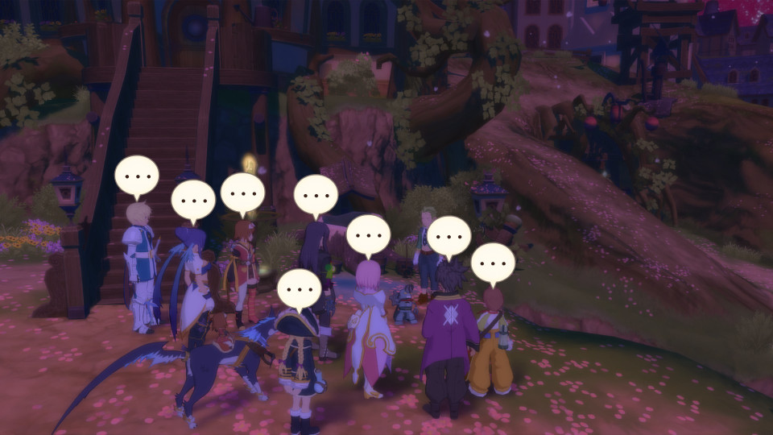
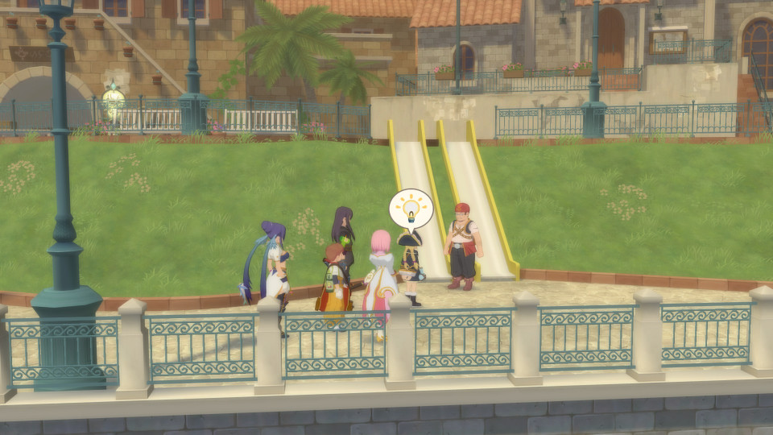
In Capua Torim, talk to the Sailor near the slide. Patty will learn Critical Moment (PS3 and Definitive Edition) Enter Capua Torim from the western entrance/exit for Karol to learn Rending Drop (One Night Training) In Caer Bocram, go north then go west all the way to fight Clint. You will get the Letter of Challenge (H. Blades) 2 (PS3 and Definitive Edition) With the Letter of Challenge (H. Blades) 2 and if you have cleared Tag Team Tournament - Challenger at the Arena, you will unlock Tag Team Tournament - Hero . If you don't have Karol and Raven in the Active Party, you will fight them in Tag Team Tournament - Hero (PS3 and Definitive Edition) In Heliord, go down to the Lower Section and talk to Witcher. Barrelow X will be modified which unlocks Karol's second Mystic Artes, Mega Flashbang Ultra X Bomber (PS3 and Definitive Edition) After (One Night Training), go to Dahngrest. Head towards the central area and pick either choice for Karol's very own Keyblade I mean Infinity (Big Voice Contest) After obtaining all recipes from Wonder Chef and unlocking recipes, go to the Port in Nordopolica to talk to Wonder Chef for Mabo Curry recipe and the Cooking Match Invitation . Go to Dahngrest to enter The Bistro Black Hole. The participant should have MASTERED every HP/TP Recovery recipes and at least Three Stars for the other recipes. That will win you the Cooking Series titles (Cooking Battle) In Yormgen, check the Red Box (Illusion) In Yormgen, speak with the Butler of the Nobles. Enter the Zopheir Rift from the west and you will see the Micro Circuit. Report back and the male characters will get their Swimsuit Series titles. Talk to the Butler and go to Halure. Go west and talk to Giovanni near the Fountain for the Super Aer Board. Report back and the female characters will get their Swimsuit Seies titles (PS3 and Definitive Edition)
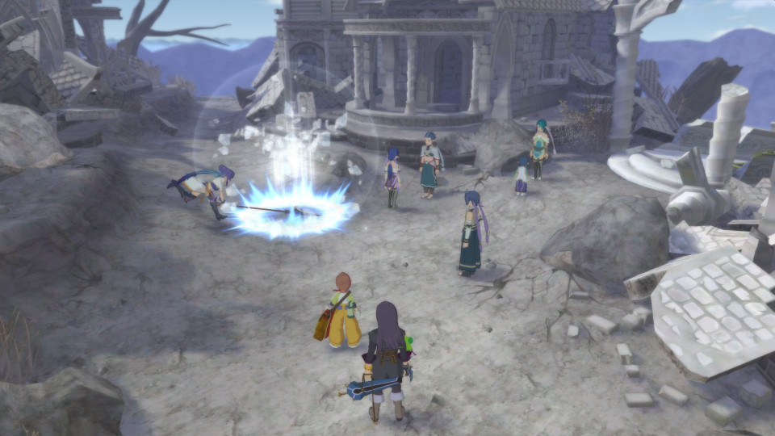
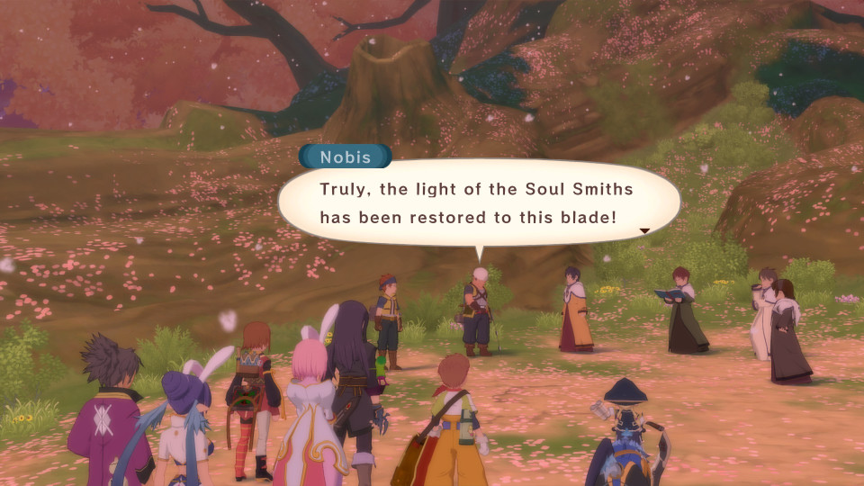
After (Guild Quest Part 7), go toward the tree in Halure to get Rita's Ivy Blade (Spirit Magic Final Part) In Mantaic, hand over Silver Edge + 1 Alpha to Cow Boy for Magic Lens, Krona's Symbol, Blue Dice, Rebirth Doll, Holy Avenger, Hypershock Yo-yo, Dragon Helm, Paladin Cape, Black Onyx, Special Gel, Red Sage, Hourglass, another Rebirth Doll, and an Alexandrite (Cow Boy Final Part) Repeatedly use any tent item on the World Map for Flynn to learn Dazzling Spin (PS3 and Definitive Edition) In the Renansula Hollow, head towards the graveyard (PS3 and Definitive Edition) Enter Relewiese Hollow for a scene with Sylph (PS3 and Definitive Edition)
Sword Dancer Sidequest (PS3 and Definitive Edition)
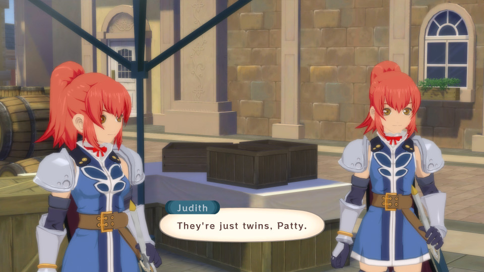
Judith's Brionac Sidequest
NOTE: Kouli's guide warned us to not exit Aurnion until the scene with Kaufman. From my playtesting, I need to exit out of Aurnion and reenter to trigger the scene.
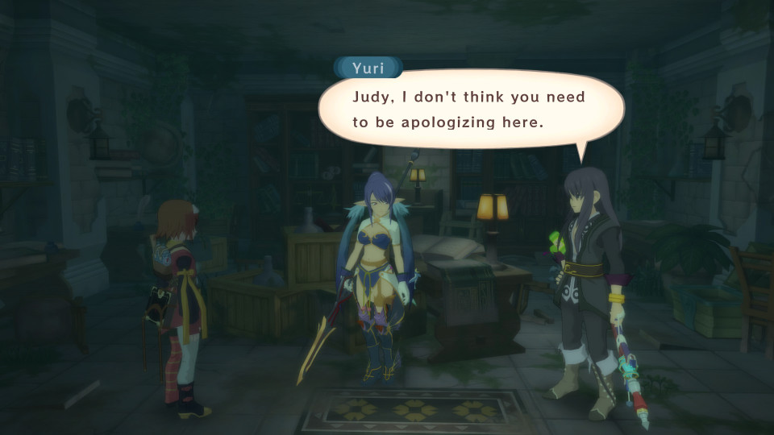
Repede's Dog Map Sidequest
NOTE: If the Aurnion scene are not being triggered, you must camp at more fields (do not be misled by the Dog Map's progress bar). Refer to the field's name at the top right of the party menu screen whenever you're on the world map.
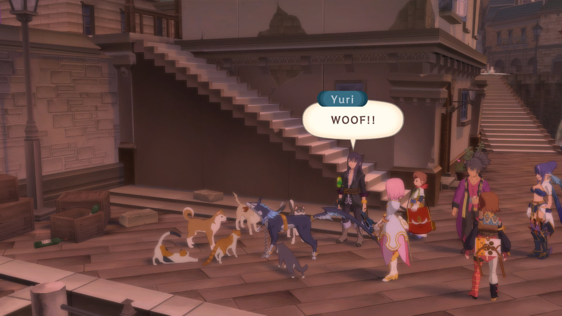
After Tarqaron Rises
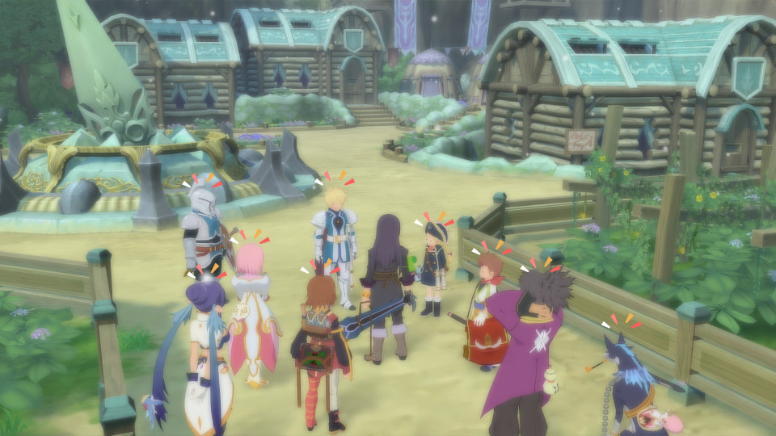
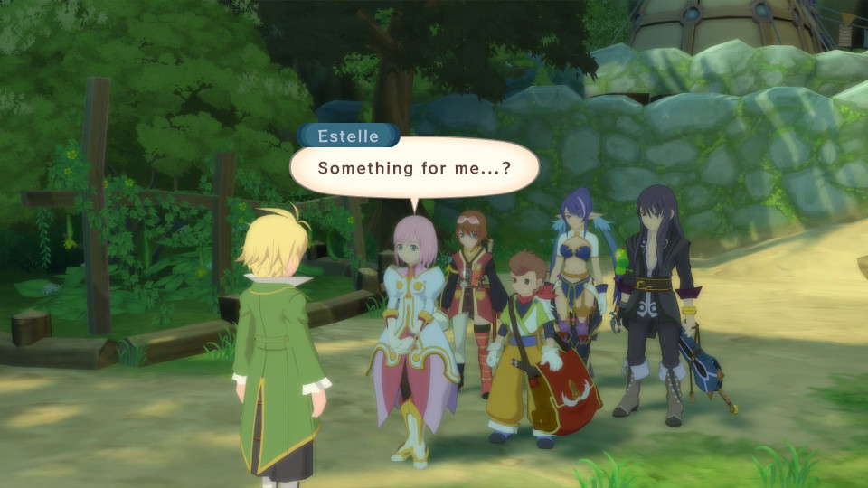
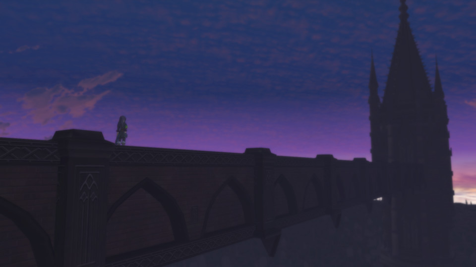
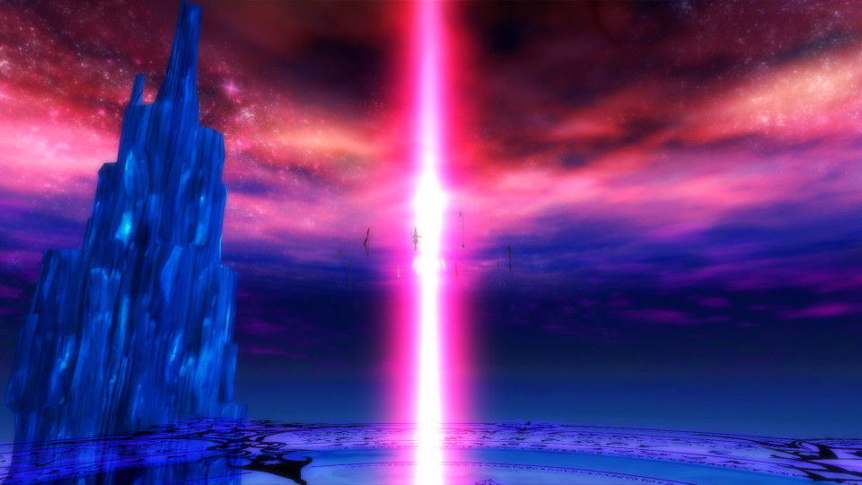
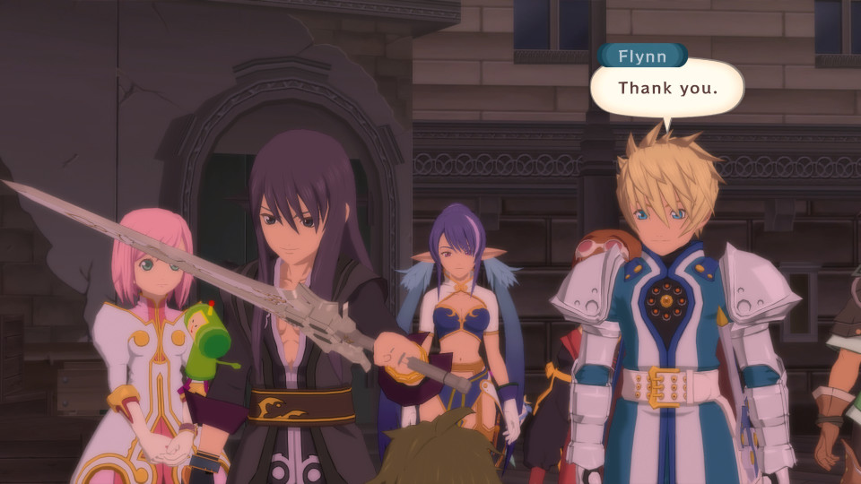
Dual Mystic Artes
After (Hope Of The Town), Yuri and Flynn can now do their Dual Mystic Artes, Twin Wave .
During battle, make sure both Yuri and Flynn are in OVL 4. Use either Yuri or Flynn and perform Arcane/Altered/Burst Arte while holding down the Attack, Artes and Defend buttons to execute the Dual Mystic Artes.
After Beating Duke (Post Game)
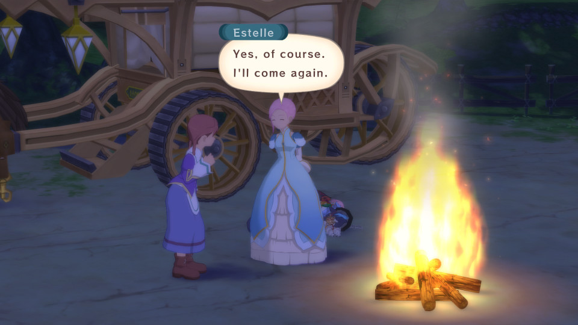